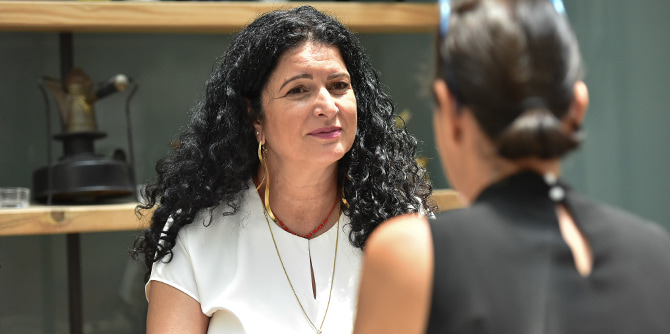
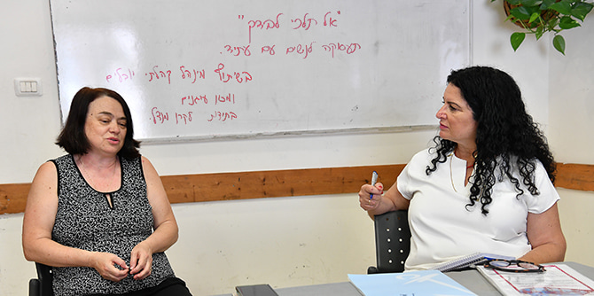

התפרצות נגיף קורונה בישראל הביאה לכך שכמעט מיליון בני אדם איבדו את מקום עבודתם. מספר הנשים שאיבדו את מקום עבודתן גבוה ב-28% ממספר הגברים. רבות מהנשים הללו משתייכות למגזרים מעוטי יכולת בחברה, ועוסקות בעבודות דחק או בעבודות המצריכות מיומנות נמוכות, דבר ההופך אותן לחוליה החלשה ביותר בשרשרת התעסוקה. אובדן הביטחון הכלכלי הבסיסי שלהן הגדיל את הסיכוי למשברים משפחתיים, לאלימות במשפחה ולהתעללות מינית, וכן לניסיונות התאבדות. כבר כיום יש עלייה של 18% בפניות למרכזי הסיוע להתמודדות עם אלימות במשפחה.
דוריס מור, בוגרת בית ספר מנדל למנהיגות חינוכית, הבינה עד מהרה "הן כעובדת סוציאלית והן כעורכת דין, כי משבר התעסוקה הוא לעולם אינו רק משבר לאדם שפוטר. הוא עלול להפוך למשבר זוגי ומשפחתי. ידעתי שבקרוב אשמע הרבה סיפורים כואבים של אלימות ואולי אפילו של רצח".

במשך יותר מ-13 שנים מנהלת דוריס את מכון עוגנים, המספק ייעוץ והדרכה תעסוקתית לאנשים פרטיים כדי לעזור להם לשפר את כישוריהם ואת מעמדם המקצועי. בגלל העלייה התלולה באבטלה במשבר האחרון, הבינה דוריס שחשוב מאוד לייצר תוכנית מיוחדת לנשים מוחלשות, במיוחד לנוכח העובדה שעקב ההכרח הכלכלי, יותר מ-60% מהנשים חוזרות לבעליהן המתעללים.
דוריס בחרה ליישם את תוכניתה החדשה "אל תלכי לבדך" בירושלים, מכיוון שהיא מכירה היטב את העיר. היא רצתה במיוחד שפעילותה תתקיים במינהל הקהילתי יובלים, המפעיל מרכזים קהילתיים בשכונות בדרום-מערב העיר. מרכזים אלו משרתים כ-25,000 בני אדם, וכמה אזורים שבהם אוכלוסיות מוחלשות.
ראשית מיפתה דוריס את השכונות ושקלה מי עשוי להתאים להצטרפות לוועדת ההיגוי של התוכנית. בהדרגה היא יצרה קבוצה של אנשים מוכשרים, בהם מנהלי מרכזים קהילתיים ועובדים סוציאליים, וכן מנהלים מקומיים ועירוניים העוסקים בהכשרה מקצועית.
בשל הצורך הדחוף שצץ במהלך המשבר, ביקשה דוריס מענק מקרן מנדל לתמיכה בתוכנית "אל תלכי לבדך" – תוכנית המיועדת לנשים מובטלות בגילאי 60-30, עם עדיפות לאימהות לילדים צעירים. הנשים משתתפות בחמישה מפגשים, אורכו של כל מפגש חמש שעות, בקבוצות קטנות, בהתאם לתקנות הבריאות (באופן אישי או באמצעות זום). התוכנית מספקת לנשים מוחלשות מענה מידי המותאם לצרכיה של כל אחת מהן, ומאפשרת לה לחזור לעבודה מתאימה ויציבה בתוך זמן קצר. התוכנית מסייעת להן לזהות את נקודות החוזקה שלהן, לשפר את כישוריהן הטכנולוגיים ולהרחיב את קשריהן, ובכך מאפשרת לנשים אלו "להמציא את עצמן מחדש" מבחינה מקצועית.
דוריס שואפת ליצור מוטיבציה בקרב הנשים, ובתמורה היא מקבלת השראה: "אני פוגשת נשים מדהימות שיודעות לבשל, לאפות, לתפור ולסרוג. לכל הדברים האלה יש ערך פוטנציאלי בשוק". היא מראה לנשים אלו שיש להן אפשרויות: "הן אפילו יכולות לשקול לשלב עבודה בתור שכירות עם ניהול של עסק קטן".
לאחר ישיבות ועדת ההיגוי וקמפיין דיגיטלי המפרסם את התוכנית, כעת מתבצע תהליך הגיוס לסיבוב הבא של התוכנית (הראשון נערך במהלך חופשת הפסח). המטרה היא לגייס כשלושים נשים מובטלות, אף שדוריס והוועדה יודעות שחלקן לא ישלימו את התוכנית.

הנשים שישלימו את התוכנית לא יהיו עוד כפי שהיו לפניה. הן יגלו את חוזקותיהן, יפתחו מיומנויות חדשות ויקבלו תחושת תקווה לעתיד, וכן ילמדו להבין שעבודה אינה רק אמצעי הישרדותי, אלא גם מרכיב מרכזי בזהותן. עבודה יכולה לספק להן עצמאות חיונית וכבוד אנושי, באמצעות עצמאות כלכלית ואישית.
דוריס מור מגלה שגם היא עברה טרנספורמציה תעסוקתית משלה: "עד גיל 40 הייתה לי קריירה נפלאה בתור עובדת סוציאלית. הקמתי את הוסטל 'מפתחות' – ההוסטל הראשון מסוגו בישראל המציע טיפול לגברים אלימים. ניהלתי גם מחלקות נוער ורווחה. הכול התנהל בצורה חלקה, עד שלפתע הגיע משבר אמצע החיים ועורר אצלי תהליך של גילוי עצמי, שעזר לי להגיע למשימה המקצועית האמיתית שלי". כחצי שנה לאחר מכן הקימה דוריס את מכון עוגנים והחלה לסייע לנשים ולגברים לפרוץ את המשבר התעסוקה שלהם על-ידי כך שהמציאו את עצמם מחדש מבחינה מקצועית וחזרו לשוק העבודה.
דוריס מאמינה שנכנסנו לעידן חדש בתחום התעסוקה, המציב אתגרים יוצאי דופן. רבים מאיתנו חיים יותר שנים, ויש לפנינו עוד שנים רבות של חיים בגמלאות. משבר קורונה העצים הכול: העולם בחוץ נסגר, עסקים קרסו ואנשים נותרו חרדים, מדוכאים ובמצב של אי-ודאות לגבי העתיד. המוטו שלה הוא שאסור לנו לנטוש זה את זה, ושאיננו צריכים ללכת לבד.
{kind=link}
{kind=link}